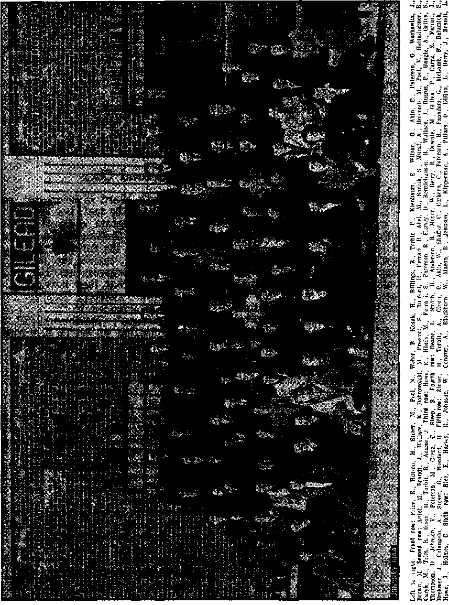

Contents
Notanda
Canada Lifts Ban on Jehovah’s witnesses
A Partial Recovery—Will She Complete Itf 3
“Legalized” Hounding of Christians
Government’s Democracy Questioned
Canada! Shun the Ditch of National
“Thy Word Is Truth”
Gilead College Graduates Its Second Class
Flavius Josephus, the Historian
Presenting “This Gospel of the Kingdom”
Manuscripts and Versions of the Greek Scriptures (Part 1)
Published every other Wednesday by
WATCHTOWER BIBLE AND TRACT SOCIETY, INC.
117 Adams St, Brooklyn 1, N. Y., U. S. A.
OFFICERS
President N. H, Knorr
Secretary W. E. Van Amburgh
Editor Clayton J» Woodworth
Five Cente a Copy
$1 a year in the United States |1.25 to Canada and all other countries
NOTICE TO SUBSCRIBERS
Remfttancea: For your own safety, remit by postal or express money order. When coin or currency is lost in the ordinary mails, there is no redress. Remittances from countries other than those named below may be made to the Brooklyn office, but only by International postal money order.
Receipt of a new or renewal subscription will be acknowledged only when requested. Notice of Expiration is sent with the Journal one month before subscription expires. Please renew promptly to avoid loss of copies* Send change of address direct to us rather than to the post office. Your request should reach us at least two weeks before the date of issue with which it is to take effect. Send your old as well as the new address. Copies will not be forwarded by the post office to your new address unless extra postage is provided by you.
Published also In Greek, Portuguese, Spanish, and Ukrainian.
OFFICES FOR OTHER COUNTRIES
England 34 Craven Terrace* London, W. 2
Australia 7 Beresford Road, Strathfield, N. 8. W* South Africa 623 Boston House, Cape Town
Mexico Calzada de Melchor Ocampo 71, Mexico, D. F. Brazil Caixa Postal 1315, Rio de Janeiro
Argentina Calle Honduras 5646-48, Buenos Aires
Entered as second-class matter at Brooklyn, N. Y,, under the Act of March 3, 1879*

This attractive window display at one of Jehovah’s witnesses’ Kingdom Halls in Columbus, Ohio, brings to notice the wide variety of books published by the Watchtower Bible and Tract Society, and available here.
116 Men Saved by One Life-Preserver ♦ In the Java sea, February 27-28,1942, the Dutch destroyer Kortenaer went swiftly to the bottom after she was torpedoed, leaving 116 men clinging to her life rafts. It was night.' The American cruiser Houston went past. She could not stop then, but as she went by a sailor- tossed overboard a life belt. As the belt hit the water a light flashed on and kept burning while the tide of battle moved away. After a while a British vessel located the light and rescued the 116 men. These life belts, now in general use in the navy, turn on automatically when they strike the sea.
Vaco Suits Save Many Lives
♦ The Vaco suits save many lives. Made of rubber, they weigh 30J pounds each, are completely watertight and keep the wearer dry and unsinkable. The suit covers the entire body except the face. The garment is kept by each seaman's bunk, ready to be put on at a moment’s notice, and is used on all ships of more than 1,000 tons.
“And in His name shall the nations hope.”—Matthew 12:21, A.R.V.
Volume XXV Brooklyn, N. Y.r Wednesday, March 15, 1944 Number 639
Canada Lifts Ban on Jehovah’s witnesses
A Partial Recovery—Will She Complete It?
THOUSANDS o£ Christians have recently emerged from a nightmare of Inquisition, a nightmare prolonged over more than three years’ darkness. In what Axis nation ? Germany ? J apan ? No; unbelievably the scene sets itself in a country tied in with the United Nations’ camp, Canada. The dark deeds cause many to wonder about the ability of any nation or combine of nations to usher in the “four freedoms” when so much evil is abroad. This wonderment and realist view, not defeatist, piques some of the world leaders, and these nettled ones make angry retort. Who are more justified in their position, the visionary theorists or those whose eyes are open to the freedom-denying forces operating about them? In the very heart of freedom’s Waterloo in Canada, while the country still had a ban clamped on Christian worship, these scathing words were uttered with a grandiose air:
I am everlastingly angry' only at those wfio assert vociferously that the four freedoms and the Atlantic Charter are nonsense because they are unattainable. If they had lived a century and a half ago they would have sneered and said that the Declaration of Independence was utter piffle. If they had lived nearly a thousand years ago they would have laughed uproariously at the ideals of Magna Char la, and if they had lived several thousand years ago they would have derided Moses when he came from the mountain with the Ten Commandments.
It was the voice of President Roosevelt, August 25, 1943, at the time of the famous Quebec conference of United Nations’ leaders.
Skepticism Understandable
This politician had to delve into the musty archives of the dim past for instances with which to lash out at the skeptics of the new-world ptopia propaganda. He did not dare face the facts that might be giving rise to present-day skepticism, and realistically cope with the causes. Right there in the Dominion of Canada, at that very time, high Canadian officials were sneering at the principles of the Declaration of Independence, laughing off as insignificant the ideals of Magna Charta; and as for the Ten Commandments, what nation can honestly say they are not everywhere being trampled underfoot in derision? Responsibility for the latter sin is heavy, for those laws are not of man’s composing, but were “two tables of testimony, tables of stone, written with the finger of God”. (Exodus 31:18; 34:1,28) In Canada at that time all four of the much publicized “four freedoms” were being withheld, the Declaration of Independence and Magna Charta documents flouted, and as for the Decalogue, at least the first, second, third and fifth commandments (involving freedom to worship God and the shunning of religious substitutes) were being infringed upon. If such conditions existed in one of the United Nations, was not there cause for concern and skepticism as to the attainability of “four freedoms”
at the hands of such men and nations, rather than an irresponsible, happy-go-lucky air of unconcern? Let us view the facts with a practical eye, and nbt through the rosy glasses of visionary political speech makers.
By a coincidence it wTas on America’s . Independence Day, July 4,1940, that the 4 blow ushering in freedom-encroachments fell. It was launched by the oldest and most virulent hater of freedom now existing, namely,, the Boman Catholic Hierarchy, using as its tool a Quebec Catholic, Ernest la Pointe, then minister of justice. This Hierarchy lackey, using his high Dominion post, caused to be passed an order in council declaring iixegal. the worship of Jehovah God by His witnesses, and even banning Jehovah’s witnesses themselves as a group. . A modern Inquisition, followed. Spying upon neighbors was encouraged, homes were raided, private libraries seized, Bible meetings broken up, and even copies of the well-known King James Version of the Bible were confiscated and ordered destroyed. These outrages were sweeping the land at the time the United States’ president’s ‘everlasting anger’ was proclaimed against skeptics of the “four freedoms’ ” being attained by the United Nations, Canada being one. His anger might have been leveled at a better target. Certainly in the midst of such bigotry and religious persecution doubts are understandable. From this malady of religious totalitarianitis Canada has since made some recovery. The ban on Jehovah’s witnesses has been lifted. This is a practical step toward reducing skepticism and inspiring confidence in United Nations’ aims. But much is still to be desired in Canada. An examination of the facts of the case is timely and will be enlightening to those ' soberly and realistically considering the problem of freedom for all.
Shoe Fits the Hierarchy
Some will immediately protest the involving of the Boman Catholic Hierarchy in the matter. They were not operating at the time of the delivery of ’ the Ten Commandments. Had they been there, however, they would have opposed; for they oppose them today. For example, the second commandment forbidding the use of images in worship has been deleted from the Decalogue as it appears in their catechisms and other publications, the tenth commandment being split into two to cover the nefarious blasphemy. They presumptuously censor God’s Word, voiding it that their religious traditions may stand. (Bevelation 22:19; Matthew 15:3, 6-9) The Catholic cult was much in evidence at the time of Magna Charta. Not only did they sneer at its ideals, but their pope issued a bull declaring it “null and void” and excommunicated the barons who had obtained its ideals of freedom. The founding fathers of America fled the continent to escape the Hierarchy’s heavy hand of persecution, and the. democratic principles of the new nation given birth by the Declaration of Independence are part of the liberalism that the Vatican has always condemned as heresy. As to the “four freedoms”, those not blinded by the smoke-screen billowing forth from the columns of, an obsequious public press can easily* see the Hierarchy’s connivihgs with the totalitarians of today; Her concordats with the dictators, her refusal to excommunicate Catholic Hitler (she did with alacrity, the barons securing the Magna Charta ideals), her recognition of dictator governments in occupied countries, the benefits to the Papacy and the enactment of laws bearing the Papal earmarks in occupied countries, these facts and countless others identify this religious rogue as the enemy of the “four freedoms”. President Rqosqvelt might well have been referring to it as the eternal opposer of freedom-measures. At any rate, their hand was in back of the dark conditions then obtaining in Canada.
The legislation used as a basis for the order in council banning Jehovah’s wit
nesses, the Watch Tower Bible & Tract Society, the International Bible Students Association, and the Watchtower Bible , and Tract Society, Inc., was the Defence of Canada Regulations. These regula* tions were adopted as war measures, and , the. following objections against Jehovah’s witnesses were cited by the prime minister as grounds for banning them: they refuse to obey man’s law when it conflicts with God’s (Acts 4:19; 5: 29); they refuse to salute the flags of nations; they refuse to heil any man; they oppose war; their literature undermines the ordinary responsibilities of citizens, especially in time of war. For nearly two years Jehovah’s witnesses suffered in silence, gagged so far as the opportunity of lodging formal protest and making a defense was concerned. Then, in June, 1942, opportunity was granted to them to make representations to a Select Committee of the House of Commons on the Defence of Canada liegu-lations. ‘
“Lift the Ban!” Cry Unanimous
. All the objections raised were answered and shown to be groundless. Out of the hundreds of cases involving Jehovah’s witnesses it was shown that not one sentence from the Watchtower publications had been cited by any judge as containing disaffection or subversion; that the vast majority of cases have been convictions for entertaining a Scriptural belief; and that therefore the convictions have been a form of religious perseeu-tion denying the right of the individual to read the Bible and in good conscience to believe and act upon what he reads. Not a shred of evidence was advanced by the government justifying its oppressive order in council. In fact, powerful though the defense advanced by Jehovah’s witnesses was, committee members declared that the strongest argument for lifting the ban was the pitiful weakness of the government’s own argument for continuing the measure. The committee recommended that the ban be lifted from ■ all four of the Jehovah’s witnesses’ organizations. In this the committee was unanimous.
But the minister of justice and the government he represented, and, above all, the behind-the-scenes Hierarchy instigators, were stubborn. The recommendation was ignored, shelved and pigeon-holed. So the modern Inquisition steam-rollered through the land and disgraced Canada for another year. The abuses sponsored by the order in council sound foreign to the ears- of United Nations’ adherents marching under the “four freedoms” banner; they smack of Naziland, Middle Ages Europe, and the early Christians’ trials under the iron heel of Rome. Read the following excerpt from the report submitted to1 the regulations committee, and judge for yourself :
“Legalized” Hounding of Chilians
Raids come at all hours. Usually it is a timid housewife whose home, is invaded by three or four R.C.M.P. [Royal Canadian Mounted Police] officers. Questions are asked, the object of which can hardly be anything else but to get convictions. The housewife is threatened that if she does not disclose certain information or produce her Bible literature the home will be ransacked or, if need be, partitions torn down to find it. Property . seized, even if wrongly seized, is rarely returned. And the property so seized includes Bibles, Bible helps, phonographs, recordings, private libraries, etc. Some persons have been ’ held in jail for a week or ten days without charges laid (London, Ont.). Bail runs from $500 to $25,000, exorbitant for the offense of preaching the gospel of God’s kingdom. Upright Christian men and women, known to the local police force to be above reproach, are arrested, convicted and jailed with never an opportunity to enter a defense upon the merits of their ease. Such women thrown into jail go into a women’s jail where the only other women are in there for crimes of immorality and where danger of contracting diseases arising out of immorality is never absent. Property losses, considering that Jehovah’s witnesses as a rule are not wealthy, run high. Some hundreds have been thrown out of employment. Spying is widespread. Jehovah’s witnesses rarely have social visits from their friends without the possibility, near to probability always, that some neighbor who knows no better will telephone the police that there is a ‘meeting’ being held and a raid follows. Social life is, therefore, broken up. Literally, Jehovah’s witnesses meet, if at all, underground, in catacombs and eaves as did the early Christians. The R.C.M.P. seem to feel that they have a special duty supervising the lives and activities of Jehovah’s witnesses, whose only desire is to serve God as he commands.
The ones representing Jehovah’s witnesses submitted to the committee the substance, or effect, as supported by court records and persecutions, of the minister’s action. The revelations will not fail to shock all those who conscientiously lAck the declared aims of the United Nations in the present global war. We quote:
The minister, in effect, by his order in council and the regulation, said to attorneys general, judges, magistrates and crown attorneys throughout Canada:
‘I have examined the publications of the Watch Tower Bible & Tract Society and the convictions of Jehovah’s witnesses. I have given my assurance to Parliament that I will not misuse powers given to me under the War Measures Act. I, therefore, guarantee to you that my examination of this literature has revealed strong evidence of subversive statements. These statements are gravely prejudicial to the safety of the state and the efficient prosecution of the war.
‘You will, therefore, ,be fully warranted, and will do injustice to no one, in imprisoning any person professing to be one of Jehovah’s witnesses (Reg.39C (2); Isa. 43: 10-12) ; or advocating the acts, principles or policies of Jehovah’s witnesses (Reg. 39C (2); Rex. v. Hall et ah, North Battleford, Sask., 1941); or if you find them meeting together (Reg. 39C (3a); Rex. v. Moore et al., Welland, 1941); or if they speak in advocacy of Jehovah’s witnesses (Reg. 39C (3b)) ; or if they distribute literature of the Watch Tower Society (Reg. 39C (3c); Rex. v. Raycove, Woodstock, 1941).
‘You will; further, do them no injustice if you order their property seized (Reg. 39C (4)) and destroyed as “enegiy property” (Reg. 39C (4)) as has been done in faet at Vancouver, Windsor, Toronto and elsewhere. Their property is to be treated as if they were enemy aliens, deprived of all citizenship; and their ordinary rights of defense in courts on the merits of their case are to be denied them. (No witness of Jehovah yet has had opportunity to enter a defense on the merits of his case, neither on behalf of himself or his property.)
‘And I further certify to you that, in declaring them illegal, I have satisfied myself that present constitutional law which guarantees to every British subject freedom to worship and serve Almighty God (Toleration Act, etc.) has no application to their rights because they do not preach Christianity (otherwise the order in council would not have been passed to,restrain all their activities). They preach subversion. They may, therefore, hold no Bible studies (Reg. 39C (3a); Rex. v. Powley et ah, Sault Ste. Marie, 1940) ; baptize no one (Reg. 39C (2) and (3a)) ; bury no one (Orillia case); are not to be allowed to celebrate the Lord’s Supper (Reg. 39C (3a)); nor to meet for prayer or praise to Almighty God (Reg. 39C (3a); Rex. v. Moore et al., Welland, 1941); nor may they preach the gospel as the Scriptures command (Beg. 39C (3b) ; Rex. v. Ford et al., London, 1940); nor obey the laws of God if they conflict with this order in council or other laws, because man-made law is superior to God’s (Reg. 39C (2)). (See every case tried, probably 500 in all.).’ [Submitted to the committee in June, 1942]
Righteous Indignation
Such was the God-defying position taken by the order in council banning Christian activities. Honest men cannot long tolerate such tyranny; and Canada has a large number of honest men who ' favor freedom. Starting in February (1943) and reaching a climax in July, the issue involving Jehovah’s witnesses and their ill-treatment was the center of heated debate in the House of Commons. Itemember, the government had adroitly side-stepped the committee’s unanimous recommendation to lift the ban. How were they forced to face the issue On February 22, 1943, L. S. St. Laurent (the present minister of justice, he having succeeded Ernest la Pointe) moved the appointment of a new committee for 1943 to consider and review the Defence of Canada Regulations. Reaction was instantaneous. It precipitated a flood of comment as to the use of setting up such a committee -in 1943 when the 1942 committee’s recommendations had been spurned. Would the recommendations of the new committee be adhered to if they were the same as those of last year, or would the government wait until the committee, returned recommendations suiting its fancy before acting? Such was the gist of the comments.
Mr. Angus Maclnnis (Vancouver East), after stating the great length and pains gone to by last year’s committee in gathering testimony and protesting the minister of justice’s disregard for the unanimous recommendation, said:
With regard to other organizations which had been declared illegal and whose members were prosecuted as a result of the activities they carried on, our report reads: “That subparagraph ‘a’ of paragraph 1 of regulation 39C be amended by striking therefrom: Technocracy Incorporated, Jehovah’s witnesses, Watch Tower Bible & Tract Society, International Bible Students Association, Watchtower Bible and Tract Society, Incorporated.” I understand that the three last mentioned are publishing organizations. Since this house opened, information has been placed in my hands that although the committee recommended that the ban of illegality be lifted from Jehovah’s witnesses, these people are still being prosecuted for being members of Jehovah’s witnesses. The committee was unanimously in favor of raising the ban on this particular sect, and no evidence was put before the committee by the department of justice which indicated that at any time Jehovah’s witnesses should have been declared an illegal organization, nor did the representatives of the department raise any objection to the recommendation made by the committee. Since coming to Ottawa, as I said, I have found that these people are still being prosecuted. Their homys are being raided and literature which they have had for ten years is being seized. There have been cases where literature forming part of private libraries has been seized, which I think is forbidden by the law.
After citing several individual cases of injustice committed against these Christian people, he concluded: ’
It seems to me that there is little use ip setting up a committee of responsible members of this house to deal with questions of this kind if the government or parliament is not going to give more consideration to its report than was given to the report made by the committee of last year; It is a disgrace- to the Dominion of Canada, that people should he prosecuted for their religious convictions in the way in which these poor people have been prosecuted. [House of Commons Dehates, February 22, 1943]
Even the Bible Under Ban!
Mr. J. W. Noseworthy (York South) said:
I wonder what purpose the minister has in mind in asking that this committee be set up. Does he hope that a new committee will arrive at different conclusions and bring in a different set of recommendations from those brought in last year? Ob are we to conclude that unless a committee of this kind can bring in recommendations which are favorable to the government, the recommendations it does bring in will receive no consideration, and that such a committee is expected to bring in recommendations which must meet with the approval of the government before they can be brought before this house for discussion and consideration ? . . ‘
The matter of Jehovah’s witnesses has already been called to the attention of this house. ... As late as last week, *the homes x of those belonging to Jehovah’s witnesses have been raided by the mounted police, their literature taken and prosecutions threatened. Attention has already been drawn to the fact that in many instances the literature taken is nothing more or less than the King James *■ Version of the Bible, the only difference between Jhe copies taken by the mounted police and those read in Christian churches in this and all other cities being that those taken by the mounted police have been printed , by a certain publishing house. In every other respect they are the same as those used by the rest of us. May I ask the minister if we have reached the stage in this dominion where he and those associated with him have been given authority to determine what religious fa (th a man shall follow or profess in this country? Are these people being prosecuted for military reasons, for political reasons, or for religious - reasons? Is it because they are not good citizens? Is it because they are opposed to our war effort? or is it because they belong fa a particular religious faith? .'. . Will the minister of justice explain just what is or wherein lies the difference between the treatment we are meting out to those people and the treatment that is being meted out under similar circumstances in Germany today? There is' this difference. Under the present administration fewer than one thousand Jehovah’s witnesses have been prosecuted. In Germany more than six thousand members of the same organization have been prose-
•: euted. They are being prosecuted in Germany • much the same as they are here, and for much the same reason, [/douse of Commons Debates, , February 22, 1943]
Many other members of the House of Commons expressed themselves in similar vein. Some declared that they had read quite extensively in the Watchtower publications, and never saw therein anything that warranted their being banned. Others were very plain-spoken 1 • that it was a matter of religious persecution (as it is in Catholic Hitler’s Holy Roman Germanic Empire), and that unless the new committee brought in a-report pleasing to the minister and his backers, it would be ignored as was the recommendation of the committee of last year.
Government’s Democracy Questioned
House members had further comments to make on July 15,1943, on the arbitrary banning and maintenance of the. Inquisition of certain organizations. One member commented: “It seems to me that the action of the department of justice or of the government is not in accord with democratic procedure. I refer to the lifting of the ban of illegality which was imposed on certain organizations.” Another said with feeling: “Oiir minister of justice has full command of the letter of the law, but in my opinion he has failed dismally to appreciate the spirit of democracy; and never in my life have I said anything about which I was more sincere. He has failed to capture the essential spirit of democracy.”
Mr. Diefenbaker made the following statements in the interests of liberty and freedom;
If there is one thing to be considered more than another in connection with the administration of regulations which grant extraordinary powers in a time of war, it is that they be administered fairly and in such a way as not to interfere with any person’s right of speech, or freedom of speech, so long as that freedom of speech is not exercised in a manner likfely to prove detrimental to the welfare of the state. Furthermore, the powers must not be used, nor must there be any suggestion of their being used, to stifle the religious beliefs of any group or holly of people in Canada. ... I have in mind the situation with respect to Jehovah’s witnesses. I do not uphold their doctrines, nor their tenets or beliefs. But I do uphold their right to worship their God as they please, so long as they do not thereby interfere with the safety of the state. Last year a committee of parliament recommended the removal of the ban on Jehovah’s witnesses. Yet the ban still remains.
The experience of most of us has been that these are harmless people, devoid of any intent to do wrong to the state. . . . Why has the ban not been lifted? It cannot be because of any fear that this organization is detrimental to the welfare of the state, or that its actions are subversive to the war effort. There has never been even the slightest evidence that such is the ease. [/louse of Commons Debates, July 15, 1943]
This house member then drew to the attention of his colleagues the case of a Mrs. Mullins, one of Jehovah’s witnesses, who was taken into custody while distributing literature that contained nothing on it but quotations from the Bible. So the ban strikes at the great Book of Freedom, God’s Word, the Bible. It is not a new victim upon which the hatred of the Roman Catholic Hierarchy has been vented. It survived the destroying tires of the Inquisition lighted and fanned by Papal Rome; it will survive’ today. It existed in completion before the religious Hierarchy’s birth; it will remain after that freedom-hating organization’s death. “The word of the Ford endureth for ever.”—1 Peter 1: 25.
Following those pointed comments by Mr. Diefenbaker, Mr. Maclnnis condemned the department of justice and demanded justice, saying:
I support the hon. member for Lake Centre in what he said regarding Jehovah’s witnesses. These people presented their case to the defence of Cana'da regulations committee last year, and the department of justice also ' presented its case, if you can call it a ease, against them. As I have said here before, never have I seen a weaker document upon which to declare an organization illegal than the document which was placed before the defence of Canada regulations committee last year as a justification of the action ’ against Jehovah’s witnesses. I get letters almost every week from members of this sect who are being molested by the police while exercising their
as long as in the exercise of his beliefs he does not interfere with the rights and liberties of others, he is entitled to hold whatever beliefs he sees fit. I should like to see the minister of justice, before the^ house prorogues, do what should have been done a year ago, namely, lift the ban on all these organizations. [Howse of Commons Debates, July 15,. 1943]
The Lord's Supper Banned
On. July 21, 1943, the stormy controversy resumed. Debate surged back and forth between members of the House of Commons and the minister of justice, Mr. St. Laurent. Several members testified that they knew7 some of Jehovah’s witnesses personally, and had nothing but praise for their good character and loyalty. Further persecutions were cited, one being an instance where a group of these Christian people were assembled to celebrate the Lord’s Supper. Mounted police charged into the hall and dis-' organized the services. Many other indignities suffered by these Christians were called to the attention of the house members. But not the faintest trace of evidence was offered to prove the government’s false charges of disaffection and subversiveness. Instead the minister could' offer only broad, sweeping and vague generalities against the witnesses, and relied upon irrelevant, prejudicial assertions to sway his hearers. He felt strongly about the prosperity of the gospel-preaching work of Jehovah’s witnesses and the resultant exposure, of. religion. (Ephesians 5:13; Matthew 10: 26) His statement follows:
With respect to the activities of these Jehovah’s witnesses, the other day I stated that tens of mill ions of their tracts and pamphlets have been put out from their Watch Tower , head office in New York. Their teaching is that all these organized religions are agencies of the Devil. They do not eall their sect a religion, but they believe the organized religions are agencies to 'maintain the Devil’s
religious rights. I do not care what a person’s
religion is, or whether he has any religion at . embrace on the human race, . . . At the all; that is his business and nobody else’s; present time—and the situation is still cob-march 15, 1«44 g
tinning—they are detrimental to the war morale of this nation. [House of Commons Debates, July 21, 1943]
How well would the false charges of this minister of justice‘have fitted in with the chorus of religious princes crying out for Jeremiah’s lifeblood! Because Jeremiah kept integrity to God and declared His judgments at a time of national crisis when war clouds hung heavy around the holy city of Jerusalem, conniving persecutors and truth-hating religious opportunists capitalized upon the tense conditions to hurl false charges at God’s truth-telling witness. They accused him of falling away to the enemy and weakening the fighting morale of the men of war; they succeeded in having Jehovah’s witness Jeremiah dropped into a dungeon and snuffing out temporarily his freedom of worship.—Jeremiah 37:13-15; 38:4-6. ■
In the above-quoted comments of the minister of justice the true cause for the ban begins to see the light of day. House members were quick to note it, too. Charges of religious persecution against Jehovah’s witnesses flew thick and fast. The following quotations will bear this out, and will also show what would have J been the proper solution if the sole purpose of the government’s action was to guard against sedition. •
Mr. Douglas (Weyburn) had this to say: • .
The minister said that these people believe that all organized religion is the instrument of the Devil. If they believe that—I do not— ■ that does not make them subversive; if they ehoose to hold that particular theological view, it seems to me that that is their privilege. . . . There is sufficient power under the defence of Canada regulations to deal with any person, irrespective of what organization he may belong to, for causing dissension in his majesty’s forces or for trying to dissuade anyone from joining, his majesty’s forces. It is one thing to deal .with an individual who is carrying on subversive acts and another thing to ban an entire organization without ' 10
giving any reason for the ban. , . . It is a sad reflection at a time when the united na’tions have been using as their battle-cry the four freedoms of the, Atlantic Charter, that two of those freedoms, freedom of speech and freedom of worship, should be in jeopardy in this country. Here is a religious sect which has been allowed to carry on its activities in the United States, to carry on its activities in Great Britain, to carry on its activities in the sister dominion of Australia; here is a sect in connection with which a parliamentary committee of this house has recommended that a ban should be lifted from it; yet these people are still having their homes raided, and on April 19 a service [Memorial] which they were conducting was broken up. [House of Commons Debates, July 21, 1943]
Jehovah’s witnesses Admittedly
Enlightening the People
Mr. Hansell knocked the minister’s argument off its pins, showing it to be nothing but froth, without weight or substance. He reasoned:
I want to read what the minister of justice said the other day in reference to the question of lifting the ban on Jehovah’s witnesses. At page 4972 of Hansard the minister is reported as saying; “As to why the ban was originally imposed upon Jehovah’s witnesses, among other organizations, I have only hearsay [probably Roman Catholic Hierarchy sources] information about that.” The special committee had expert witnesses from Jehovah’s witnesses. They appeared .before the committee and made their submission. They were ' questioned, and questioned by, shall I say, some champions of the same school of thought as the minister of justice himself, and the minister, in deciding whether or not the ban should be lifted, should certainly take into account the evidence which was submitted to the committee and the fact that the members of the committee had an opportunity to question and did question the witnesses. Further on, on the same page, the minister said: “I have ascertained, however, that this is a very large international organization and the , amount of literature that is put out from the Watch Tower on behalf of this organization is something fabulous.” Because an organization is large and international, does that mean for a moment that it is subversive? There are a good many organizations [the Boman Catholic Hierarchy, for one] that are international and whose literature is issued in large quantity and has a large circulation, but surely that is no evidence that the institution is subversive. The minister also said; “It is also well known that thousands of phonographs with recorded speeches of their great leader, the so-called Judge Rutherford, are being used to further enlighten the people." Just because they have gramaphone records is no reason why the organization should be considered subversive. By the way, the minister made a slip of the tongue when he said they were being used “to further enlighten the people”. I think the people need a little more enlightenment, but if the minister had said “to further confuse the people”, it would have made his argument a little stronger. Further on he said: “There are also, or therd were, very large numbers of motor trucks fitted out with these phonographs and loudspeakers to blare to the population at large the merits of that particular doctrine and the demerits of all religions.” Supposing they did, is that any evidence that the organization is against the war effort or that it is subversive ? I have a right to say that my church is the only true Church and that all other churches are wrong, I have that right because it is embodied in the freedom of religion. . . .
Furthermore, as I said the other day, if any individual among Jehovah’s witnesses rises and makes statements that are subversive, he can be dealt with in the same way [confinement in jail], and I have nothing against that. He should be dealt with in the same way. But to outlaw the whole organization and to say that they cannot gather together as an organization and worship God freely is something that is absolutely contrary to British democracy. . . . That is my contention, and I urge the minister that he lift the ban on that organization. That is what I am urging tonight. I do not believe the minister’s arguments hold water in the least. [House of Commons Debates, July 21, 1943]
Clear-cut Case of Religious Persecution
Surely this gentleman scored the minister on the point that was rankling him most, the religious question and the desire to gag the witnesses for religious reasons, and not to meet political needs. Remember, these men are not defending Jehovah’s witnesses; they hold no brief for the beliefs of the witnesses, and repeatedly state as much. But they are defending freedom to worship, not just freedom for their particular kind of worship, but freedom of worship for all. And they recognized the ugly head' of religious persecution rearing itself up in their land, and they determined to behead the beast for freedom’s cause. On this tumultuous day of sharp debate other voices joined the cry for freedom and tolerance.
Mr. Gillis said:
The only accusation I ever heard against them was that they make a nuisance of themselves; they pass around a lot of literature; they want to sell you a book every afternoon, and that kind of stuff. But we have freedom in this country to do that sort of thing; .1 am free to tell that fellow to get away from the door if I do not want to talk to him. I believe that to ban them as a subversive element, or an element causing dissatisfaction in his majesty’s forces, or as in any way interfering with the war effort, is ridiculous, and it was an absolute mistake to include them under the defence of Canada regulations. . . . According to the Ottawa Citizen of recent date, if General Eisenhower’s mother were living in this country she would be under this ban; she is a member*of this group, [House of Commons Debates, July 21, 1943]
Mr. Maclnnis bluntly voiced the motive of the ban, when he answered the weak murmur of the freedom-opposers that the witnesses were using religion as a cloak to do things detrimental to the war effort (though they never cited one • instance in support thereof). Incidentally, the “banners” were the ones using a cloak, a patriotic cloak to grind a religious axe. Mr. Maclnnis declared:
There are sections in the defence of Canada regulations which take care of actions of that kind without having to put a whole religious organization under a ban of illegality, without having to invade churches where people are partaking of holy communion, without having to interrupt their service to ask for registration cards, without having to take people off to the police station because they have not their card. ... In my opinion it is clear, pure religious prejudice that is maintaining the han. [House of Commons Debates, July 21, 1943}
It remained for Mr. Quelch, however, to courageously put his finger down squarely on the troublesome religious cult inspiring the fight to slaughter Canada’s traditional freedom of worship:
Sometimes I become convinced of the fact that this action regarding Jehovah’s witnesses is largely a religious question, Some three years ago a couple of men called at my house on the prairie one morning. I did not know who they were. They asked me whether they could play a couple of records. I thought at first they were salesmen for a certain make of phonograph. We gave them permission to, put on the records and they played them. They were two recordings of the man by the name of Judge Rutherford. I want to give the committee the assurance that in those two speeches by Judge Rutherford there was not one word of a subversive nature. The whole of the two speeches was a bitter attack on the Roman Catholics [Hierarchy], I do not suppose that is considered subversive. . . . But it does make one wonder whether the action against Jehovah’s witnesses is largely on account of their attitude toward the Roman Catholics, instead of their attitude of a subversive nature.
Tq the cry of “Shame!” the speaker responded:
You may say that it is a shame, but that question is being asked all over this country. I am asked it from one end of Canada to the other, and I am just repeating the question. . . . The suspicion is there. I am not planting' it. [House of Commons Debates, July 21,1943]
On thes day of verbal battle for freedom the minister of justice said that the regulation was amended “to provide that instead of its being an offence to belong to one of these banned organizations, it would be an offence to act as an officer or member thereof”. This means you may take your Bible (provided the mounted police do not snatch it from your hand and confiscate it), read it, believe it; but you must not obey the divine injunctions or act in harmony with your Godly convictions. You must sear your conscience and become calloused to God’s will, because an order in council says that you cannot prove your faith and maintain a pure conscience by works and acts, that you may be a hearer of the ’word but not a doer. (1 Timothy 3:9; 4:2; James 1:22-25) This rivals the misty sophistries of Justice Frankfurter, of the United States Supreme Court. It aids and abets hypocrisy. How can a true Christian be a follower of hi-s Leader, Christ Jesus the itinerant Preacher, if he must confine his worship within four walls and the inner, recesses of his mind? Such a course may suit the religiously-tutored conscience of those held fast in religion’s grip. Such a course does not meet the demands of freedom of w’orship for Christians, whose obligations are not gauged by the lax boundaries of the dulled and deadened conscience of religionists. They have been purged from the dead works of formalism and ceremony and ritualism in dimly-lit cathedrals. (Hebrews 9:14) Their divinely-tutored conscience demands more if it is to be "a clear conscience towards God”. (Acts 24:16, Emphatic Diaglott) The Christian must act in obedience to Jehovah God. Others canno,t rightly say it is sufficient for the Christian to hide the Bible-light under a basket or under the rooftop of a meeting hall. A question asked nineteen centuries ago may again be asked by the Christian: “Why is my personal freedom to be decided by another man’s conscience?”—1 Corinthians 10:29, Weymouth.
Opposition to Ban Widespread ■
The '-quotations of house members’ comments on this issue may have seemed one-sided to the reader. They are, for this reason: the ban-supporters distinguished themselves by their silence. Not only was the outcry against banning Christian worship heard in the house, but it was sounded nation-wide. The public press caught up the freedom standard. Representative editorials are here quoted. On February 24, 1943, about the time things began stirring in the house over this issue, the Globe and Mail said editorially:
Mr. St. Laurent, the minister of justice, seems determined to convince the Canadian people that he is a very stubborn politician, whose liberalism is only skin-deep and whose contempt for Parliament is as profound as any dictator’s. On Monday last, when he moved for the creation of a special committee of the House of Commons to study the Defense of Canada Regulations, he reiterated hjs refusal to act upon explicit recommendations made by the same committee last session. Its report urged that the ban now imposed upon the organized existence of three groups, the Communists, the Jehovah’s witnesses and the Technocrats, be removed as soon as possible, but nothing has been done about implementing this recommendation and Mr. St. Laurent evidently intends to continue disregarding it. There is nothing mandatory about the report of'such a Parliamentary committee, but a minister who treats with, contempt the recommendations of a committee appointed by the government, of which he is a member, is standing on a slippery slope. Such an attitude is tantamount to a declaration that in these days a minister is a law unto himself, and that his judgment is far superior to the collective wisdom of a committee. These are curious and indefensible pretensions, and if they can be maintained they will soon make a mockery of the free parliamentary democracy for whose preservation we are supposed to be fighting. ...
The Jehovah’s witnesses are not, like the Communists, a political organization, but a
, MARCH IS, 1944 . religious sect, and there has been no serious evidence that the activities of its adherents have been inimical to our war effort. It is true tliat their zealotry for a curious brand of Protestantism makes them view with a critical eye the Roman Catholic Church, but so do members of the Orange Order, and. nobody has dared to propose that the homes of any of the latter should be raided and literature found inside them seized. . . . The elected representatives of the people have pronounced for the removal of the bans upon these three groups, and Mr. St. Laurent by his obduracy is defying their will and making Canada look ridiculous and hypocritical 'in the eyes of our Russian allies and other nations.
Five months later, on July 23, 1943, when the debate in the House of Commons had reached a climactic pitch, this same paper again protested through its editorial columns:
An Indefensibi^e Policy
Wednesday the House of Commons debated for three hours an Opposition demand for removal of the ban imposed on the religious sect Jehovah’s witnesses under the- Defense of Canada Regulations. .The debate yielded nothing, although members of all the Opposition parties were united in the assault on government policy. It was another of the all-too-numerous occasions' when the government stubbornly held its position by refusing to face the issue. . . .
The issue, and all argument advanced for the lifting of the ban, .focuses on the fact that a group of citizens is being’discriminated against and “persecuted” under federal law for what it believes. If there is religious freedom in Canada, such a thing should ndt be, and cannot be tolerated. If there is-religious freedom, then all persons are permitted, freely and equally, to follow the faith of their choice. And it certainly is not for the government, or the minister of justice, to sit in judgment on what any person or group of persons shall believe. The government does not discuss the ban on any such basis. It ignores the principle to hide behind the argument that among the Jehovah’s witnesses there are persons who
13
have committed, or might commit, subversive acts; who talk, or might talk, against the state; who try, or might try, to persuade others from performing services they are legally required to perform.
This is utter nonsense. By no distortion of reason ean it be made to justify a ban on Jehovah’s witnesses or any other religious body. - And if the Defense of Canada Regulations mean what they are supposed to mean, such a ban is wholly unnecessary. If a member of the United Church, the Jewish faith or the Catholic Church should discourage recruiting or commit other subversive acts, would it be just to outlaw the-whole body of his faith? It would be unthinkable. The offender would be dealt with under the regulations on the basis of his offense. The crime is in the act, not the faith. To suppose that people can be stopped from believing or thinking as they wish to do by declaring them an illegal entity is medieval. Certainly it is an abuse of the principle of freedom even to attempt it. If the government fears the influence of the Jehovah’s witnesses upon the war effort, then the responsibility is on the authorities to cheek it, but on the basis of offenses and not on the supposition that some peculiarity of their faith might lead them to do wrong.
This same paper, the Globe and Mail, “Canada’s National Newspaper/’ carried a copyright article by J. V. McAree. It supported the statement made in the . house by Mr. Quelch, namely, that it was general opinion throughout the country that Jehovah’s witnesses were the victims of religious persecution because of their exposure of the Boman Catho-lie Church. Mr. McAree said, in part:
It *has been recommended by a committee of the House of Commons on which all parties were represented that the ban on the Communist Party and Jehovah’s witnesses should be lifted. No action has been taken by the government, which probably finds the majority report embarrassing. Why the witnesses should have been classed with the Communists is not easy to understand; and though no particular reason for their suppression was given, it was generally supposed, that they had made themselves obnoxious to the Roman Catholic Church. Indeed they have waged particular theological war against it. But it is interesting to note that in England the sect is recognized and exempted from military service, while in the United States it has been pronounced harmless and non-subversive by Attorney-General Biddle. . . .
They may be a nuisance, but they are a religious sect in exactly the same way that the Protestants and Catholies are members of religious sects. . . . Our guess is that with regard to morality and good works they would probably average considerably higher than any of the main divisions of Christianity. . . . They carry on their campaigns by means of innumerable books and pamphlets, and portable phonographs which deliver messages from their leaders, and Scriptural selections. They are a most friendly people and it is difficult to be rude to them, however much their doctrines may offend good taste or normal common sense. ... No doubt these beliefs seem crude and childish to most people; but the point is that they are religious beliefs and in all civilized countries which are democracies one religious belief is held to have the same rights as another. It is not that people ‘respect’ religious beliefs different from their own. It is that it has been found in practice that if one is attacked or suppressed all will be in danger;
A Partial Recovery
The totalitarian fever that had been gripping Canada for more than three years broke on October 15,1943. The ban on Jehovah’s witnesses was lifted. Vindicated and rewarded w’as the persistent fight for freedom that had been waged on the home front for so long, with such little seeming progress, gome will ask, Why so extensive a review of the freedom controversy now? The ban has been lifted; is it not unnecessarily stirring up “sleeping dogs” to revive the sharp speeches in the house that were over whatis now a settled issue? If it were a settled issue the answer might be a Yes; but the issue is not settled. Canada’s recovery was only a partial one. Leaflets containing nothing but Scripture texts are still banned, if printed by a certain publishing house. The same King James Version Bibles once confiscated under the ban are still forbidden. These were some of the things protested against. These evils are still living. The arguments that have been reviewed and that smashed against these evils still stand as timely. The old hatreds against the free distribution publicly of enlightening Bible truths still smolder. The banlifting was not due to any change of heart by those responsible for it; it was the result of the fight waged by freedomlovers and the persistent zeal and unbreaking integrity of Jehovah’s witnesses in standing fast for freedom to worship Jehovah God as He commands.
The incompleteness of recovery is shown by this: the ban on Jehovah’s witnesses was lifted; the ban on the Watch Tower Bible & Tract Society, the International Bible Students Association and the Watchtower Bible and Tract Society, Inc., remains. The review of the argument in the house shows that the unanimous recommendation of the committee was that all four of these groups, and not just one, should be freed from oppression under the ban. The government has offered a compromise measure to appease. The committee’s recommendation was watered down. It must be assumed the committee is still of the unanimous mind that the ban should have- been lifted from all four of the groups.
What About freedom of Press?
What is the effect of this partial .relief? It is this: The witnesses themselves are no longer an illegal organization, but the legal corporations they use in their gospel-preaching work are eon-. sidered illegal. What Jehovah’s witnesses believe, teach, publish and distribute is all right. They may print their doctrines and tenets and call upon the people and leave such published matter with them; that is all right. But it must not be printed by the Watchtower. What difference does it make who prints the publication? It is the message,' that counts. If that is all right, what else matters? The government says that what is printed is permissible but the one printing it is not. Just one little line, the name of the Watchtower publishing house, makes the book illegal; remove that line, let someone else print the identical book, and it is legal. When the granting or withholding of freedom of the press hinges on such immaterialities and bald discriminations, and the truthhating enemy seizes upon such straws to gag his exposers, he is desperate indeed.
How absurd it would be to say that the Roman Catholic Church is free to operate, but that the publishing houses that print the Catholic Douay Bibles, The Faith of Our Fathers, catechisms, and the sundry other publications essential to the Catholic way. of worship, are banned. The outcry that would burst forth would deafen the world’s ears! The cry would be justified. Operating under this principle the government could say to a newspaper, 'What you print is OK, but we don’t like you. You’ll have to quit. Get someone else to print for you.’ Freedom of the press vanishes into thin air. This has happened to Jehovah’s witnesses in Canada. If it can be done to one, it can be done to others.
Will She Complete It?
Immediate’ steps should be taken to ' complete the recovery of freedom for Jehovah’s witnesses. Canada should finish the good work she started when she lifted the, ban on Jehovah’s witnesses by lifting the ban on the three affiliated organizations. A false impression of the situation is gained from merely reading the newspaper accounts of the ban-lifting. These state that the property of the Jehovah’s witness organization will be restored, and it seems that full relief has been realized.
{Continued on page 18)
-John 17:17
A FRIEND is one who loves you all the time; one who even without your knowing it .makes a great sacrifice in order that you might be the recipient of some real good. The greatest friend that you have had, or anyone else has had, on earth is the One who was once known as Jesus of Nazareth. Why? Because He left all His heavenly riches and glory, became a man, and laid down His life in ignominious death in order that all lovers of righteousness might have one fair and full opportunity for the blessings of life everlastings—John 15:13.
The facts show that nineteen hundred years ago Jesus went away on a long journey', even into heaven itself. When He went away He promised His disciples that He would return and that, when He returned, those who loved His appearing would receive many precious gifts, if the facts show that this precious friend has returned, and we begin to see that all the fond hopes of lovers of the Most High God are about to be realized and that “men of good-will” out of all nations and tongues are soon to enter into endless blessings, what unspeakable joy7 this brings! Those who have watched and waited for His coming necessarily7 break forth in singing the praises of the Lord.
For centuries Jews had been hoping, looking and praying for the coming pf a Messiah. For nineteen hundred ymars -now Christians have been hoping, watching, and praying, and waiting for the coming of Christ Jesus the Lord. Messiah and Christ mean the same, namely7 The Anointed One. The whole world of mankind, groping in darkness, laden with grievous burdens, has been groaning and still 'groans in pain, waiting for some relief, but not knowing how it will come. (Romans 8:19, 22) Lovers of truth and righteousness are in fact waiting for the Messiah, the Christ, and His kingdom of righteousness. When these come to a knowledge of the fact that the Lord, the great Deliverer and the Benefactor of believing humankind, has returned, every such honest soul will be filled with joy and every7 grateful heart will respond in songs of gladness.
Tim reasons why we should expect the Lord’s second coming are numerous, but unless we call these to mind, even though we once knew them, we overlook their importance. If we have never known them, then an examination of these reasons is satisfying to the hungry soul. Reason should always be employed in the examination of Scriptural questions. Sound reasoning and the Scriptures are necessarily7 in accord. “Come now, and let us reason together, saith the Lolm.” (Isaiah 1: 18) The Scriptures prove conclusively that Jesus Christ died and was raised from the dead that He might be the Redeemer of mankind; that He ascended on high and presented the value of Ills human sacrifice in behalf of man, and that at some time the benefits of His great sacrifice must be bestowed upon all believing and worthy creatures on earth. The Scriptures declare that God formed the earth for man’s habitation, that lie made it riot in vain, and that the /_>arth abideth forever. So if, according to God’s promise to the patriarch Abraham, a blessing is to come through Abraham’s seed, the Christ, to all faithful humankind, it follows that the Lord must establish an order of things over the earth that obedient men might enjoy7 the things which God purposed them to have, and that the Lord must be present to establish such a righteous arrangement over the*earth.
The student is not left to theory or conjecture. The Scriptural evidence is given in such abundance that all doubt is for ever removed. God’s prophet long ago foretold the coming of a mighty one, and said that this mighty One should have a government of righteousness; that “his name shall be called Wonderful Counsellor, The mighty God, The everlasting Father, The Prince of Peace. Of the increase of his government and peace there shall be no end”. (Isaiah 9: 6, 7) An “everlasting Father” implies that there shall be some offspring who will have everlasting life. Hence this promise indicated that a government would be established wherein man would be granted the privilege of life eternal. » Once there was on earth a typical Theocratic government which foreshadowed that Messianic Government. It ruled the nation of Israelites. Jehovah God made a covenant with that nation, to the exclusion of all other nations. He gave them a law to shield them from the Influences and machinations of the adversary and to lead them to Christ, their great Messiah. The Israelites or Jews, as a nation, did not keep this law, because they were imperfect; and some of their kings were especially wicked. The time came when Jehovah God said to Zedekiah, the last human king of Israel: “And thou, prof ane wicked prince of Israel, whose day is come, when iniquity shall have an end, thus saith the Lord God ; Remove the diadem, and take off the crown: this shall not be the same: exalt him that is low, and abase him that is high. I will overturn, overturn, overturn it: and it shall be no more, until he come whose right it is; and I will give it him.”—-Ezekiel 21: 25-27.
It follows from this that at some future time there would come a mighty one who would establish a kingdom of righteousness, having full authority and right thus to do.
At the overthrow of Zedekiah God permitted the Gentiles to establish a world-wide dominion in the earth. The Lord God through a vision to Daniel pictured the development of four worldpowers in succession, which would exist for a certain period of time, and which would continue until Jehovah’s chosen One should come, whose right it is, and then this righteous One should take possession of earth’s affairs and rule the earth. (Daniel chapter 7) It is to be expected, of coursp, that the unrighteous governments would hold on to their power in earth as long as possible, and that they would still be thus doing at the coming of the great King, and that He ■ would oust these earthly kingdoms of unrighteousness and establish a righteous government. Even so the Lord God, through the prophet Daniel, says: “In the days of these kings shall the God of heaven set up a kingdom, which shall never be destroyed: and the kingdom shall not be left to other people, but it shall break in pieces and consume all these kingdoms, and it shall stand for ever.” (Daniel 2:44) It follows, then, that this righteous King must be present before He breaks to pieces and consumes the Other kingdoms. The Scriptures speak of the righteous kingdom as the kingdom of heaven, because it is in accord with the heavenly Father’s will and ruled by the invisible power of His great Messiah.
Christ the Messiah’s disciples will have no physical part in violently destroying “all these kingdoms” of this world, because they are not authorized to even attempt to do so. They wait upop Jehovah’s anointed King to do so front heaven, and in the meantime they proclaim the gospel of His established Kingdom to all people with a hearing ear and warn them of the invisible presence of the King and point out to them the way of safety in that time of world-wide destruction.' All those.of good-will who now take heed will find the Messianic King to be their friend unfailing in this time of crisis and world distress, and they will enter into still greater blessings when the enemies shall have been put out of power and destroyed and the Messianic Kingdom rules all earth without a rival.
Canada Lifts Ban
(Continued from page 15} But restoring the property to Jehovah’s witnesses, who are not a property-owning corporation, will present an enigma inasmuch as the Watchtower and the International Bible Students’ organizations are still outlawed, and they are the property owners.
Jehovah’s witnesses and their corporations are inseparable. All do the same work and have the same ends. To admit Jehovah’s witnesses and their work and yet retain the ban on their organizations by which they accomplish their ministerial duties in a lawful find efficient manner smacks of the course of Pharaoh of old in Egypt. At one crucial point in the ten plagues when the going got particularly tough Pharaoh offered to lift the ban on the Israelites’ worship of God and permit them to go and sacrifice unto Jehovah as He commanded. A string was attached: their flocks and herds must be left behind. Now, these animals were required by the Israelites for sacrifices. The two must not be separated. The freedom-offer of Pharaoh was hollow, and Moses rejected it. Pharaoh’s heart was hardened by Moses’ demands for full, realistic and practical freedom of worship, and more plagues followed.—Exodus 10:24-27.
It is hoped that Canada, now that she has made some amends, will see the injustice of and insufficient relief granted by the partial ban-lifting. The publishing-house organization is inseparable from the witnesses if they are to fulfill their commission and worship in the way God has commanded, namely, “The gospel must first be published among all nations.” (Mark 13:10) Publications must be used to publish the gospel. They are as vital to Jehovah’s witnesses’ manner of worship as the sacrificial animals were to the Israelites under Moses. The printed message of Jehovah’s witnesses is now approved by the Canadian government. Common sense tells that the one printing the message is immaterial. This poses the question, Why is not the ban on the publishing house, the Watchtower Bible and Tract Society, Inc., lifted?
Recall in the debate herein published that the minister of justice was much alarmed at the magnitude of the publishing work done by the Watchtower, sayiiig incredulously: “Tens of millions of their tracts and pamphlets have been put out from their Watch Tower head office in New York”; and again: "This is a very large international organization and the amount of literature that is put out from the Watch Tower oh behalf of this organization is something fabulous.” Could it not be that it was desired to stem this tremendous flood of truth that the minister admitted ‘enlightened the people’? Perforce the enlightenment referred to was concerning religion’s hypocrisy and Christianity’s opposition thereto, since that is the field embraced by the Watchtower publications.
Could organized religion, particularly the Roman Catholic Hierarchy, be interested in shackling the volume of activity of Jehovah’s witnesses? Who else could be? Who else has so much to cover and shield from the Bible searchlight? The persistent clamorings of freedom-lovers and consistency with United Nations’ aims forced some kind of action, So that which would clear the slate on the surface, before the casual, superficial public gaze, was done; but the fountain-source of books and booklets remains plugged up. Practical means of Jehovah’s witnesses’ worshiping is still wanting. They have been denied the wherewithal to “publish” the gospel by the cutting of the supply line of books and booklets that so plagued the politico-religious Hierarchy and her toadies. Failing to hold the throttling death-grip on Jehovah’s witnesses, the religionists try to impede, circumvent and obstruct the distribution of their God-given message. In short, they have attempted to hamstring Jehovah’s witnesses in Canada.
Canada! Shun the Ditch of
National Destruction!
Canada has passed a crisis, successfully. During the ban’s reign she was following in the footsteps of the Catholic dictators of Europe. They have all banned Jehovah’s witnesses, and that ban remains. Canada has halted her headlong plunge on totalitarian skids and has turned from the path of destruction. May her steps grow stronger and surer and more determined as she treads back toward freedom’s highway. May she completely restore to her citizens who are Jehovah’s witnesses their lost freedoms. She has narrowly escaped being defeated and'enslaved, even as she promised “four freedoms”. She has avoided the trap ensnaring the religious rascals devoted to totalitarianism: “Great swelling words of vanity uttering, . . . promising freedom to them, they themselves being all the while slaves of corruption, for by whom one hath been defeated, by the same hath he become' enslaved.” (2 Peter 2:18,19, Rotherham) She must go farther if she is to escape entirely.—Psalm 9:17.
President Roosevelt, when in Canada, complained of skeptics of the attainment of the “four freedoms”. The cause for skepticism in Canada has been greatly .reduced. Jehovah’s witnesses appreciate the relief granted; but, while appreciating liberty guarantees from any human source, they are primarily grateful to their great God of Freedom, Jehovah. This does not mean that His servants would be so impregnable that never at any time would they suffer loss of freedom. It does mean that when affliction and persecution has been permitted long enough as a test of His servant’s integrity and to identify His enemies, victory and freedom He will give to'the faithful ones. All works out to the furtherance of Jehovah’s purposes, even-the w'rath of wicked men resulting in His praise.
(Psalm 76:10; Romans 8:28; Philip-pians 1:12-21) So Jehovah’s witnesses thank God for all things, including freedom. Governments do not give freedoms to the people; God gives them. The state must not try to pass itself off as God’s vicar in this matter. Democratic states do guarantee inherent rights. When these proper guarantees are lived up to, Jehovah’s witnesses appreciate it. When they resolve themselves to mere words, doubts arise.
May Canada make true by actions the words uttered by Prime Minister Winston Churchill. They were spoken at the time of the Quebec conference about one week after President Roosevelt’s address previously mentioned. They were far from true then; they are not entirely true now. He said:
Here at the gateway of Canada, in mighty lands which have never known the totalitarian tyrannies of Hitler and Mussolini, the spirit of freedom has found a safe and abiding home. Here that spirit is no wandering phantom. It is enshrined in parliamentary institutions based on universal suffrage and evolved through the centuries by the Englishspeaking peoples. It is inspired by the Magna Charta and the Declaration of Independence. It is guarded by resolute and vigilant millions, never so strong or well armed as today. [New York Times, September 1, 1943]
In times past other British dominions and members of the British Commonwealth of Nations have slipped from the high plane of British democracy. Some are still in the totalitarian wallow. Now that Canada, and before her Australia, has lifted the ban on J ehovah’s witnesses, why do not Jamaica, Trinidad, West Africa and other recalcitrant members of the British Commonwealth follow the good example? .
‘Come, Let Us Reason Together1
Pause, and reflect. Look at the eternal mountains, the peaks and towering crags, the wilderness fastnesses with their mighty rivers, the billowing oceans and
seas; shift your gaze skyward and contemplate in wonderment and awe the night heavens, the luminous bodies dotting that expansive vault and hurtling through limitless space at incredible speeds, moving in fixed orbits on a time . schedule that is unvarying. _ The mind turns to the Creator, and 'the insig-1 nificance of man. The basest creature 1 realizes his utter inability to alter Jehovah’s purposes relative to all these works of His creation.
Yet puny, presumptuous man ignorantly outlaws a work that this same Almighty Creator orders in the . earth, and declares Jehovah’s organization established for that purpose illegal! Little wonder God sits in the heavens and laughs! (Psalm 2:1-4) How ridiculous are such governmental decrees, sounded with so much solemnity and pomposity by little men with twisted and distorted minds totally void of understanding! Of such stuff dictators are made. Leaders of nations championing the “four freedoms” will not emulate them.
More than appears on the surface is involved in this matter of Jehovah’s witnesses. Not just the witnesses’ freedom, not just the peoples’ civil liberties, not just some proposed “four freedoms”; life, death, universal domination, and mighty spirit worlds are involved. Only blackest failure can await plots against God. The'Devil is doomed to such fate. What wicked success can far less powerful man hope for? None whatsoever! They fight against God in opposing His witnesses. (Acts 5:38,39; Zechariah 2:8) They may kill some; they did Christ Jesus. He gained victory over death; so will His followers. The wicked may succeed for a time. Sentence against them may seem delayed. Though it may seem to tarry, it will come on time. President Roosevelt declared that if the Axis tyrants knew the plans laid.against them at Quebec they would give up in terror now. If the nations could foresee the terrible vengeance the Lord has purposed for all persecutors of His witnesses they would fear and quake, and abandon opposition to The Theocracy. One higher than the highest earthly ruler sees the oppression of His little ones. (Habakkuk 2:3; Ecclesiastes 5:8; 8: ’ll) ' The gracious God speaks to the nation^ now through His witnesses and with a life-giving message. Soon He will speak to the incorrigibly wicked ones in His wrath at Armageddon with the voice of death and unending destruction.—Psalm 2:5.
As for Jehovah’s witnesses at this troublous time, let it be understood that they are not seditious. Accusing religionists level such charges at them for selfish reasons, just as religionists in the past did. (Ezra 4:15; Luke 23:2; Acts 17: 6, 7; 24: 5) In declaring God’s Word and offering literature explaining the Scriptures in the light of the times Jehovah’s witnesses render invaluable service to men and nations.
There is much talk now about the revival to Bible-reading. The New York Times Magazine, January 2, 1944, in an article by L. H. Robbins, stated:
More than Ever the Book for Today Timeless, yet Forever Timely, the Bible Holds the Promise that a Better World Is Possible
The Bible has more readers today than ever it had before. It is read on battlefields all round the globe. It is read in countless homes where it may once have gathered the dust of neglect. Lonely people, burdened people, departing people search it for strength and courage. Anxious people seek light for judging these times of spiritual tempest and earthquake. ■
Yet despite the trend to Bible-reading, world conditions today surpass in wickedness and distress any time in history. More is needed than formalistic, religious Bible-reading.1 It must be understood. Jehovah is opening its heretofore hidden truths in this time of the end, ■ and He is using His witnesses as the informers of all persons of good-will toward Him. Their activities are to the welfare of men and nations. God’s purpose that the witness be given will not swerve aside for governmental decrees of illegality against it As well try to sweep back the ocean with a broomstick, > and with better chances of success. Condign punishment opposing nations or combines of nations will reap at Armageddon. (Isaiah 8:9-13; Psalm 9:17) Life unending awaits all those who heed Jehovah’s message.
, Neither the nation of Canada, nor any other nation, is deciding the fate of Jehovah’s witnesses. On the contrary, by their treatment of God’s servants they are fixing their own eternal destiny. (.Matthew 25:31-46) The judgment of the nations is on! As nations set their course relative to Jehovah’s witnesses, may they make the wise choice. Remember: “Blessed is the nation whose God is Jehovah.”—Psalm 33:12, American Standard Version,
THE “old world” is education-conscious. Even while it is in the throes of global war plans for the postwar program of education are being brought forth and debated. Courses of study embracing many fields of knowledge are being championed by their proponents. Politics, commerce, sociology, and, yes, by all means, religion are fields well represented in the proposed educational campaign by which this old world expects to lift itself up by its own bootstraps into the glittering, man-made “new.world order” envisioned by political and religious leaders. The most vital educational need is pushed into the back* ground as unimportant, even undesirable.
The crying need of the people now and in the future is education in God’s Word, the Bible. Proper fear of its Author is the beginning of wisdom. He is the Giver of true wisdom, having laid up in His Word sound wisdom for creatures righteously disposed. (Psalm 111:10; Proverbs 2: 6, 7) Worldlings unwilling to search the pages of this Book of wisdom will find themselves “ever learning, and never able to come to the knowledge of the truth”. “Lo, they have rejected the word of the Lord; and what wisdom is in them?” (2 Timothy 3:7; Jeremiah 8:9; 1 Corinthians 1:20; 3:19) The need of people of good-will for education in God’s Word is being met, and will continue to be met; but not by the educational program outlined by the builders of the postwar world.
Jehovah God, the foremost Educator of the universe, makes the provision. Through His organization He trains His ministers, that they may “be able to teach others also”. (2 Timothy 2:2) They -are commanded to “go . . . and teach all nations”. (Matthew 28:19,20) His organization on earth has established the Watchtower Bible College of Gilead, located at South Lansing, New York, to specially train and fit ministers for service in various nations. In June of last year the first class of graduates left its halls, and they are now busily engaged in ministering free education to the impoverished people who have been long underfed on Bible truths and overfed on religion. On January 31, 1944, the ranks of these specially trained Theocratic educators were swelled by the graduation of the second class from Gilead college.
Five months previous one' hundred ministers of the gospel had been called in from the field where they had devoted their full time for at least two years in ministerial work. For five weeks they applied themselves diligently to the prescribed course of study. At the end of this period examinations eliminated six-
teen as unable to meet the high scholastic standards set by the college, and these returned to full-time ministry in the United States. In due time the remaining eighty-four completed the college term, which is divided into two semesters of ten weeks each. Eighty-three graduated with merit and, at the exercises op January 31, received diplomas testifying to their completion of the course with merit, as well as their qualifications to engage in educational work and colabor with the Watchtower .Bible and Tract Society in preaching the gospel of Jehovah's kingdom. (See page opposite for the picture of the graduating class.)
In this five-month period of strenuous mental activity and study the students covered material that would comprise a two-year curriculum in secular schools. Bible research, Theocratic field ministry, public Bible speaking, supreme law, Bible themes, college English, college mathematics, and Spanish constitute the-courses of study pursued at Gilead. In addition to this, the students averaged upward of thirty hours each month in the field preaching the gospel of the Kingdom, thus putting the information gained in classrooms to practical use. Add to this -the fact that after the those of classes in midafternoon each student put in approximately three hours of manual activity around the. campus or Kingdom Farm (on which the college is located), and one can readily appreciate the intensity of the training program. “Much study is a weariness of the flesh,” however, and therefore the extracurricular work-around the farm and college grounds was of real benefit.
Having completed successfully so strenuous a five-month course, then, it was with genuine joy that the graduating students assembled in the auditorium on January 31. At 9: 30 a. m. 228 had assembled to witness or participate in the graduation exercises. Friends and relatives of the graduates were present, some from neighboring cities, some from distant states. A song and prayer to'' Jehovah having opened the program, each of the four instructors spoke directly to the students, counseling them as to their obligations to serve as Theocratic educators in teaching all nations. The college president, N. H. Knorr, who is also president of the Watchtower Bible and Tract Society, which organization founded the college, then addressed the assembly for over an hour, on - “The Glorious Treasure of Service”. As the absorbing theme of this discourse unfolded each one present appreciated more than ever the opportunities and blessings granted to him by Jehovah God. Enthusiastic applause marked the conclusion of this talk, and shortly thereafter the eighty-three graduating with merit had received their diplomas, thus climaxing and ringing down the curtain on their college careers.
On this occasion there were many . reminiscences by the students of the happy, busy days just ended. In no other way could the spirit pervading the student body be better captured for the reader than by recording some of these observations and impressions expressed.
One states :
I had the great privilege of working before the term opened arid saw most of the other students arrive. What a colorfnl sight they were, hailing from practically every state in the nation! Drawling southerners; snappy, • staccato-voiced New Jerseyans, broad-accented westerners'; from everywhere they came. One loved them all from the first because they were Theocratically minded. They all were intent on the Kingdom interests and had been pioneers [full-time ministers in the, field] for at least two years, and some for many more. 'Those were happy days: greetings in the hallways, in the lounge, and elsewhere as the brethren sought to get acquainted and compared experiences in the field. [Judges 5:11, Am, Stan, Fer.]
The weeks flew by quickly. We all kept so busy studying that we hardly noticed anything other than our studies. The brethren during the first five weeks had vied with the roosters
in the ehieken barn for early rising, as many repeatedly rose at five or five-thirty to study before breakfast. After the trying five-weeks examinations the brethren were less tense about their studies, and they loosened up and were more congenial. They no longer got up so early to study Spanish or Bible themes.
Joyful days of walking in the autumn sun between classrooms followed. The beautiful autumn changed to winter; the rolling hills of Kingdom Farm overlooking Lake Cayuga turned gold and red, and later took on the somber tone of winter, and finally were covered with snow. The final quarter roiled by. Then eame the last class period in which new material was introduced. This was followed by a week of review, and then four days devoted to final examinations.
Graduation dayl "That was a thrilling, never-to-be-forgotten day. Then eame parting. “See you in Mexico,” or “Till we meet in Cuba”, were typical parting words. Brethren who had lived together in unity for five months, bound by ties stronger than blood, bade each other good-bye. All had come eager, hopeful, enthusiastic, looking forward to making the most of their blessed opportunity and being better equipped upon leaving to carry out their consecration vows. At parting they were eager, enthusiastic, serious, and more mature as they set out for new territory, new Theocratic fields of activity, and greater privileges of service.
Another, much impressed by the scenic setting of the Gilead campus, gives voice to her sentiments:
It was a beautiful day in late summer when we eame over the last hill and saw Gilead, nestled there so peacefully, far from the bustle of the city and the strife and turmoil of the ’ Devil’s world. As we drew up to the building and stopped we were greeted by others, who Jiad come as we had. It was so interesting, meeting brethren from every part of the country brought together here because of their mutual love and zeal for Jehovah.
The first task for us to do after our arrival was to get settled in our rooms. It was a joy to move into such comfortable, cheerful rooms. After what we had been living in out in the field this was real luxury, and we sincerely 24
hope it has not spoiled us. We soon learned that everything was run on an orderly basis at Gilead. Everywhere in every department there is perfect order, harmony and unity. Each is assigned to his task and he goes about it joyfully. The next few days we became acquainted with our instructors and the Farm family, and were assigned our tasks, to be taken care of after the day’s studies were over. This proved to be a real blessing to us, as there we had an opportunity to get away from the strain of study and to relax, our minds. The work was always a pleasure, as in the Lord’s organization 'there are no taskmasters, hence no one giving orders. If there was a special job to be done, the servant in charge asked who would like to help, and, of course, everyone was willing, and the job was soon done, with laughter and singing.
Another thing which has impressed me is the scenery round about Gilead. It is indeed awe-inspiring. The trees outside my window. When I first came they were clothed in summer leaves of green; as the weeks passed I watched them change from green to the most gorgeous reds and browns and yellows. Then, leaf by leaf, they lost their beautiful garments until, today, they stand etehed against the sky, beautiful in their nakedness; each in its own beaptiful pattern. At their feet, and just beneath my window, runs a happy little stream. When I first came it was dry and I gave it little thought; but when the rains came, what a surprise! This spot that had been dead suddenly eame to life,, and water was flowing through it, winding its way among the rocks and rushing merrily over miniature waterfalls, singing a happy tune as it wended it| way to beautiful Lake Cayuga nestled between the hills behind Gilead.
No matter where you look there is beauty. A beauty that speaks of a marvelous Creator; an all-wise and loving Father who, in this time of strife and turmoil, has made a wonderful provision here at Gilead, to train men and women as instructors to go forth in His name to meet the famished, hunger-bitten, home-coming “prodigal son”, and, with all the tender care of the Father, guide and direct this class . into His fold, there to feed in green pastures, beside the still waters, and forever after to
serve to the honor and glory of His name, A third describes in simple phrase emotions experienced upon arrival and departure: ’
We were 'just in time for breakfast, preceded by morning worship. With a lump in my throat I joined the group in the Lord’s prayer. A real family, I thought. Why, I haven’t said that prayer with a group since I was a little girl at home! And so it is; those at Gilead are a real family, as I grew to learn during the past twenty weeks.
Truly Gilead is a Theocratic college, I realized, as the president, in the opening address, explained that our instructors are in fact our brethren, simply Kingdom pubUshers of Jehovah like ourselves. As the weeks went by they endeared themselves to us, showing their zeal for the truth by expounding to us in classes daily the precious Bible truths, joining with us in the door-to-door work and magazine work each week-end, and studying The W(itchtower with us every Sunday evening. Why, it was no time at all before Gilead was home!
And now our course of study is over, and, with grateful hearts to our heavenly Father for this His advanced instruction in the great Textbook of Freedom, we look eagerly forward to serving Him more efficiently and feeding His “other sheep” all over the world.
As the graduation exercises began we looked about us at each'dear face, our brothers and sisters, with whom we have worked and lived and learned. Tomorrow this family would be gone, I reflected. We are leaving home. But what a wonderful promise awaits fulfillment before us, for our Lord Jesus Christ has promised; “Verily I say unto you, There is no man that hath left house, or brethren, or sisters, or father, or mother, or wife, or children, or lands, for my sake, and the gospel’s, but he shall receive an hundredfold ■ now in this time, houses, and brethren, and sisters, and mothers, and children, and lands, with persecutions; and in the world to come eternal life.” [Mark'10: 29, 30]
So a second class of students have ‘freely received’ Theocratic education at Gilead: now they are fanning out in many directions to ‘freely give’ to others instruction in the most vital field of education, the field scorned by selfcentered world-builders. A third class is now diligently pursuing their studies at Gilead, and in due time will graduate, to be followed by unnumbered classes in the future. “Gilead” means “heap of testimony”, that is, testimony and witness to Jehovah’s name and supremacy. It is living up. to its name through its graduates.
Flavius Josephus, noted Jewish historian, was born at Jerusalem about 3f-4 years after the death and resurrection of Jesus Christ, which occurred in A.D. 33. He claimed royal and priestly ancestry. His priestly lineage ran in the first of the 24 courses of the priesthood, which was the most eminent.
As a boy Josephus appears to have been exceptionally bright, and eager to learn the Jewish law. -
As a youth he spent three years with an ascetic who lived upon food that grew of its own accord in the desert, following in some measure the example of John the Baptist. The name of'this Jew was Banus, and some think he was a follower of John. At any rate, Josephus seems to have imbibed a favorable impression of John, and so mentions him in his writings. After three years of desert life Josephus returned to the city and, like Paul prior to his becoming an apostle, “lived a Pharisee,” whose rules he compares with those of the Greek Stoics.
When he was twenty-six years of age Josephus made a journey to Rome, to defend some priests who had been arrested by Felix. This Felix also figures in the experiences of the apostle Paul. (Acts 24) On the way to Rome Josephus suffered shipwreck, and he says that he had to swim for his life, along with about 600 other passengers. This experience reminds one of the apostle’s shipwreck, on which occasion, it appears, he also was in the deep a considerable period of time. (2 Corinthians 11: 25, 26; Acts 27), Since shipwrecks were relatively frequent, it is not likely that the occasions were the same, although they cannot have been many years apart.
Josephus made quite an impression at Rome, for he was a man of the world, and through favorable connections made the acquaintance of Poppea, Caesar’s wife, through whose influence in turn he obtained the release of the priests he had come to defend.
When he got back to Palestine there was a rebellion afoot. But Josephus felt that any such opposition to Rome was hopeless, and sought to dissuade those involved in the plot from carrying it into execution. The priests and the Jewish aristocracy were not .in favor of an uprising, but they were all, including Josephus, ultimately involved in it.
In his own description of the rebellion and how he came to be involved in it he graphically portrays the numerous plots and counterplots that marked this period of his life. He was in his early thirties now. One of the incidents he describes as occurring at this time is of particular interest to those who now contend for freedom of worship. He says:
At this time it was that two great men, who were under the jurisdiction of the king [Agrippa], came to me out of the region of Traehonitis, bringing their horses and their arms, and carrying with them their money also; and when the Jews would force them to be circumcised, if they would stay among them, I would not permit them to have any force put upon them, but said to them, “Every one ought to worship God according to his own inclinations, and not to be constrained by force; and that these men, who had fled to us for protection, ought not to be so treated as to repent of their coming hither.”
Josephus was at this time sole commander of the Jewish forces quartered in Galilee. He found that the Galilean Jews were divided, and so feared his position was too weak to meet the army of Vespasian. Retiring to the stronghold of Jotapata, he encouraged his soldiers in the siege and resisted with great skill the attacks of Vespasian. Vespasian conquered, however, and Josephus was put in chains, but found opportunity to exercise the gift of “prophecy” which he claimed to possess by predicting that Vespasian would become the next emperor. When this actually occurred Josephus was set at liberty, his chains being cut to signify that he had been unjustly bound. Josephus seems to have had the gift of getting out of tight spots. He now took the name of Flavius, which was the family name of Vespasian, whom he accompanied to Alexandria, Egypt. Josephus was done with rebellions. He had while still in Palestine witnessed from without the terrible siege of Jerusalem under Titus, and had even been sent by him to persuade the Jews, if possible, to give up their resistance. Their refusal resulted in the final destruction of Jerusalem, fulfilling the great prophecy of the Lord Jesus Christ as recorded in Luke 21 and Matthew 24.
Josephus persuaded Titus to spare his relatives and most intimate friends in Jerusalem. He himself, because of his aid and counsel in connection with the .siege, received a valuable estate in Judea, but realized that it would not be a good place for him to stay. So he journeyed to Rome once again, became a Roman citizen, and devoted himself to writing, in Greek. Hi^ books are highly esteemed, and contain much of value and interest, although they are not always accurate. They sometimes contain material (such as legend and wrong chronology) that is hardly creditable to a Jewish historian. There is a brief mention of Jesus Christ in his “Antiquities of the Jews”, but this is now generally believed to have been tampered with. It appears in Book IS, chapter 3, section 3 of his “Antiquities of the Jews’1, and reads as follows in current editions:
Now there was about this time Jesus, a wise man, if it be lawful to call him a man; for he was a doer of wonderful works, a teacher of such men as receive the truth with pleasure. He drew over to him both many of the Jews and many of the Gentiles. He was [the] Christ. And when Pilate, at the suggestion of the principal men among us, had condemned him to the cross, those that loved him at the first did not forsake him; for he appeared to them alive again the third day; as the divine prophets had foretold these and ten thousand other wonderful things concerning .him. And the tribe of Christians so named from him are not extinct at this day.
Commenting on this passage and the “Antiquities” as a whole, The Catholic Encyclopedia says: .
Attempts have been made to refute the ' objections brought against this passage both for internal and external reasons, but the difficulty has not been definitively settled. The passage seems to suffer from repeated interpolations, The fact that the “Antiquities” testifies to the truth of Divine Revelation among the Jews as among the Christians, and confirms the historical facts related in the Bible by the incontrovertible testimony of pagan authors, renders this* work of Josephus of extreme value for the history of the chosen people. The accounts which he gives of the rise and mutual relations of the different Jewish sects, which are so important in the history and sufferings of the Savior; his information regarding the corruption of the ancient Jewish customs and institutions; his statement concerning the internal conflicts of the Jews, and lastly his account of the last war with the Romans, which put an end to the national independence of the Jews, are of prime importance as historical sources. . . .
The early Christians were zealous readers of Josephus’s “History of the Jews”, and the Fathers of the Church, such as Jerome and Ambrose, as well as the early ecclesiastical historians like Eusebius, are fond of quoting him- in their works.
Another writer, Joseph Scaliger, in his De Emendatione Temporum, says:
Josephus is the most diligent and the greatest lover of truth of all writers; nor are we afraid to affirm of him, that it is more safe to believe him, not only as to the affairs of the Jews, but also as to those that are foreign to them, than all the Greek and Latin writers, and this because his fidelity and his compass of learning are every where conspicuous.
The testimony of Scripture being complete in itself, it cannot be said that the writings of Josephus are indispensable. That they are valuable will not be denied, and it is sure that they add their voice to the many witnesses that testify to the truth of the Word of God.
Manuscripts and Versions of the Greek. Scriptures (In Three Parts—Paid 1)
OUR purpose at the outset is to see the relationship that ancient manuscripts today extant have to the Bible as we now possess it, so as to confirm otir faith that the printed Bible we study at present is authentic and reliable as God’s inspired Word.
By the expression “Greek Scriptures” is here meant what are commonly called “the New Testament books” in their original language, which was mainly Greek, the; Gospel of Matthew having originally been written by him in Syriac and later translated or rewritten .by Matthew' himself in the Greek. We shall consider the most important manuscripts (MBS.), to wit: The Alexandrine, which is generally represented by the letter “A”; the Vatican Manuscript No. 1.209, usually designated by the letter “B”; the Sinaitic .Manuscript, designated .by the
>. Hebrew letter » (Aleph), the first letter of the Hebrew alphabet; the Codex Ephraemi Rescriptus, designated by the letter “C”; and also the ' Cambridge Manuscript, or Codex Bezae Cantabrig-iensis (“Cantabrigiensis” meaning “of or pertaining to Cambridge”), usually designated by the letter “D”. You will 1 find such letters used in footnotes of various Biblical publications or commentaries; for instance, in The Emphatic Diaglatt, now published solely by the , Watch Tower Bible and Tract Society, or in such other modern translations as Rotherham’s, Weymouth’s, Moffatt’s. Hence your acquaintance with these symbols and their significations will serve ' you as a critical apparatus to understand readily the references made by such translators and commentators.
We shall also consider the papyrus manuscripts, which are designated by the capital “P” followed by a small superior number, as P1, Pa, P10, P“, P13, P1’, P”, P!3, P37, P3B, P45, P*6, etc.
There are some 12,000 known manuscript copies of the inspired Christian Scriptures, such MSS. being either in the original Greek or in foreign-language versions thereof. There are some 8,000 Latin-version MSS., and over 4,000 MSS. in the original Greek, besides about a thousand MSS. of other versions besides Latin; making, all together, at least 12,000 copies. These MSS. have been assigned to various “recensions”, as they are called, but better termed “families”, inasmuch as “recension”, in the modern sense, means a revision. In the sense intended by those handling manuscripts, the term means a family, that is, a family group of MSS., which MSS. are distinguished by certain peculiarities. that place them in relationship one with the other and that show they have come from a common ancestor MS. this side of the original autograph writings of
. the Greek Scriptures by the inspired writers.
We can appreciate how the families of MSS. would arise, when we consider the instructions of the apostle Paul, as
. CONSOLATION
aVB^CRIBERS
A ‘ '
Have you observed the special offer on the which ends April 30. Hence, by sending in
last page of this magazine, whereby a copy of the new 384-page book "THE TRUTH SHALL MAKE YOU FREE" and the 32-page booklet FREEDOM IN THE NEW WORLD are being given free with each ■ yearly subscription for The WATCHTOWER received during the 3-month Watchtower Campaign ?
This same special offer is now applicable to every new CONSOLATION magazine subscription received during this campaign,
your subscription, now for the CONSOLATION magazine at the regular rate of $1.00 a year, you will receive FREE the above-named book and booklet in addition to having come to you in your mail biweekly for one year CONSOLATION, a magazine of truth, facts, and news essential for all liberty-minded people. CONSOLATION is unbiased and uneensored, and is published, not for commercial gain, but to do'good in conveying reliable instruction pointing to the way of righteousness.
WATCHTOWER ■ if" Brooklyn 1, N.Y.
Please send me the Consolation magazine regularly for one year, for which I send herewith $1.00 contribution. Please mail to the address Below a copy of “The Truth Shall Make You Free” and Freedom in the New World, which I am to receive as a premium.
Name ...... Street ..............................
City . ........... State ...............................
28 consolation.
:
given in Colossians 4:16, namely: “And when this epistle is read among you, cause that it be read also in the church of the Laodiceans; and that ye likewise read the epistle from Laodicea.” At 1 Thessalonians 5:27 he writes: “1 charge you by the Lord that this epistle be read unto all the holy brethren.” In writing the Colossians the apostle said that his letter should be read not only to'the brethren of that congregation hut also to the congregation in Laodicea. Then, vice versa, the letter he wrote to the Laodiceans should be read to the congregation at Colosse. At Revelation 1:3 the Lord Jesus, caused the apostle John to write: “Blessed is he that readeth, and they that hear the words of this prophecy, and keep those things which are written therein: for the time is at hand.” All such instructions show that the scriptures were not to be confined to the brethren to whom they were first and directly sent, but that they were to he communicated to the brethren of other congregations.
There being just one original or autograph writing, it would become necessary to share the information with other companies of the Lord’s people by making of copies of such autograph writing. For instance, the apostle Paul sends a letter from Rome to the church . at Colosse, in Asia Minor, and says: "Have this letter read likewise to the church of Laodicea’; Colosse being near Laodicea. The Colossians would be very careful and anxious for that original writing of ■the apostle Paul, but the news would get around to other Christian assemblies that the Colossians had this excellent letter from the fjord’s apostle. Such other congregations would like to get the information contained therein ; so copies would be made to satisfy their desires. The copies would not be made by professional copyists of books nor by bookmakers of those days. Neither would copies be found upon the commercial bookstands or library shelves of the day. It is to be expected that, in the main, the copying would be done by trustworthy brethren of the Christian congregation. They may have been not very well educated men, or may have been sisters, but they could copy. They did make copies, a number of copies. Likely several brethren would be set to the work of making each a copy7 so as to multiply copies quickly, Duc to human frailties and imperfections, such copies would hardly be exact duplicates and perfectly7 correct in every7 respect. There might be a misspelling, or an omission of a word • or phrase, or a transposition of a word, misplaced ahead of or behind another word. Titus mistakes would enter into the products of these imperfect and fallible copyists; and.if there were, say, three copies made of this letter to the Colossians, each copy7 by a different writer could possibly have different mistakes in it.
The copies would be sent out, probably one to Ephesus in Asia Minor; another down to Alexandria in Egypt; and another to Caesarea, in Palestine. A copy might even be sent back to Rome, where the original was written. Being all by different copyists, different first-copy mistakes or alterations could be contained in each respective MS. Now, when the copy7 w7ould come to hand at Rome, it would undergo a recopying by other scribes, and these would copy7 the mistakes in the MS, that was submitted to the congregation at Rome. Being likewise human, they could make errors of their own; so that, as time went on and the multiplication of copies continued, the variations from the apostle’s original autograph writing to the Colossians would increase. However, their common ancestor would he that first copy7 sent to Rome, and each congregation in the Western Mediterranean area that would have one of such second copies would possess a certain type of MS. embodying different minor peculiarities but having a common basic likeness. Hence the MSS. in that western section of the Mediterranean world would grow up into a family or "recension” called the “Western recension”.
Easterly therefrom, in Asia Minor, alongside of Constantinople and including Antioch of Syria, another group of MSS. would grow up with their outstanding peculiarities as to style, errors, transpositions, omissions, and additions. Nevertheless, fundamentally they would have something in common and consequently would be related one to another as a family. This would be because they had a common MS. ancestor somewhere this side of the original writing of the apostle, say, the copy that wras sent to Ephesus in Asia Minor. All such together might be called the Syrian family of texts, because Antioch was located in Syria, and for which reason also it could be just as well called the Antiochian family or recension. It could also be called the Constantinopolitan family, because Constantinople was in the area where this type of MSS. dominated. Inasmuch as Constantinople was originally the city of Byzantium, that is, before Emperor Constantine moved there and changed the name, one could call this same family the Byzantine recension. So, in that area of circulation of Scripture MSS. there would be a general usage of the Syrian, or Antiochian, or Constantinopolitan, or Byzantine family of MSS. This family dates particularly from the time of a man named Chrysostom, archbishop of Constantinople, who died in A. D. 407; hence it dates from the fifth century. Such body of MS. texts reveals an effort on the part of religionists in that part of the world to revise the Greek text, which text had by that time undergone so many alterations. Though there was an attempt made to get back somewhere close to the original apostolic standard, the Syrian, Antiochian, Constantinopolitan or Byzantine family of texts embodied an effort to present a smooth reading of the Scriptures in preference to literal accuracy. The editors of the text did not seem to be so concerned as to the literal accuracy of the text as they were to have a smoothed-out reading. In cases where there were parallel readings in the several Gospels the editors would make them all correspond or have equal fullness. If the Matthew account of a certain occasion omi tted something that the Luke account stated, they would supply and incorporate in the Matthew account some of the information from the Luke account. If the reading was somewhat rough and they could smooth it out by inserting a preposition or making some other alteration, the editors would so do.
The Western family of MS. texts is so called because of the support which it draws from the Latin-version MSS.-agreeing with that body of Greek MS. texts. That is to say, the MSS. of the Western family are supported by the old Latin or Italic versions ■which circulated in the West prior to Jerome’s Latin Vulgate produced at the beginning of the fifth century. This Western family or recension also has some support from the Syrian-version MSS. It is true that the Western recension readings are quoted by many so-called “fathers of the church”, but by none earlier than the fourth century. Consequently the Western readings do not have such eally support, Und are therefore not so authoritative. Careful examination shows that the Western texts were subject to free handling by the editors, there being a lot of additions or insertions in the text, lengthy ones included; and such largely distinguish this Western family of MSS. This common feature serves to put them into a distinct classification as a recension or family.
Another family *of texts is the “neutral” recension, being so termed by two Cambridge University scholars, Dr. B. F. Westcott and Professor F. J. A. Hort, who were prominent textual critics in the nineteenth century. This family is classified as “neutral” because its MSS. fall in neither of the above recensions and it is distinguished by an absence of their errors or alterations.
The “neutral” texts, which were based in Egypt as a center or point of origin, are outstanding in that they do not have any substantial changes or do not betray any great editorial rehandling of the text causing wide departures from the original apostolic autograph writings. This recension is also backed up by the Coptic versions, that is, the versions in the Egyptian language and which circulated in Egypt, of course. The neutral texts are also backed up by the quotations of Scripture made by the earliest . “fathers of the church”. Westcott and Hort thought that the neutral type of text exclusively held the field in ancient Egypt, and that it was the sipgle dominant text used by Christian congregations down there. However, now due to the evidence that has turned up within the last fifty years, a new family of texts has*come before our notice, which family also existed and circulated in Egypt contemporaneously with the neutral text.
It might be remarked that Westcott and Hort, noting some striking variations and peculiarities in a number of MSS. related to the neutral family, thought there was a sub-family which they called the “Alexandrian” recension. This included*a small but unimportant number of MSS. They had very minor changes; from the “neutral” family, mostly in the style of writing. But such classification .of an “Alexandrian” textual type was rather hazy and rested on poor foundation. Hence now the classification seems to have been dropped; but the term “Alexandrian” appears to be a better designation for that body of texts which have hitherto been known as the “neutral” texts of the Greek Scriptures.
As to the new family, which has taken form within the last fifty years and which has strong support as really existent, it is known as the “Caesarean” recension. This does not denote that it had its origin in Caesarea, Palestine. Actually it too had its origin in Egypt, but it was transferred to Caesarea and was established there as a center. This transplantation appears to have been due to an early writer named Origenes, or Origen. This came about in the third century, when he started writing at Alexandria, Egypt, and using one of this type of texts. In course of time he moved to Caesarea, where, in continuing his writing, he used for a while a “neutral” type of text, but finally he shifted back to the textual type he had used in the beginning. * Thus Origen established Caesarea as the center which would name another family of texts, the “Caesarean”, but which had widely circulated also in Egypt.
The Caesarean type of text is supported by a number of “minuscule” MSS., such as Nos. 1, 13, etc. (Italic numbers) There are two general styles of Greek writing, known as the “majuscule” and the “minuscule”. “Majuscule” means written in large characters called “uncials”. “Uncial” seems to mean literally “inch-high”. Why? Because the uncials were all capital letters and seemed to be so large that Jerome, by way of exaggeration, called them inch-high or uncial. The minuscule style came into vogue first about the ninth century. It is a smaller style of writing, in a cursive or running hand. In other words, it is not written in all capitals. As stated, a number of such minuscule MSS. support the Caesarean family of MSS. as really being in a class by itself. Other MSS. which have been discovered within the last half century also lend support to the existence of the Caesarean family, such as the Koridethian MS., found at a mona"stery in Koridethi in the Caucasus mountains and designated by the Greek letter Theta (0); and also the Freer MSS. at Washington, D. C., and designated by the letter “W”.
So much for the families of texts. The material and style of MS. production next. prove interesting' and claim- our attention in the next of this series.
IS THERE a way one can now follow to be liberated from the bondage and turmoil of this old world and enjoy freedom in a free world? If so, where may one seek information pertaining to the finding of this way?
Yes, there is a way! and information relative thereto is within your reach in the WATCHTOWER magazine, which is published for the very purpose of guiding liberty-seeking people in the free way set forth in God’s Word.
The WATCHTOWER is always available at the regular yearly subscription rate of $1.00. However, duping the 3-month WATCHTOWER Campaign, which commenced February 1, the Watchtower Society is giving FREE with each new yearly subscription for The WATCH TOWER, as a premium, their latest 384-page hook, "THE TRUTH SHALL MAKE YOU FREE", and 32-page booklet, FREEDOM IN THE NEW WORLD. You will find great comfort in reading the enlightening truths in these tw’o publications and also those that will be brought to you in the columns of The WATCHTOWER throughout the coming year.
Seek the truth and you -will find the way to freedom. We suggest your doing this by receiving regularlv (twice monthly) the 16-page WATCHTOWER magazine.
WATCHTOWER. 117 V-.’, 3. Alyi L N.Y.
Please list my name as a Watchtower subscriber for one year, for which I enclose a contribution of $1.00. Also mail to me postpaid a copy of "The Truth Shall Make You Free" and Freedom in the New World.
Name......................'......... Street ...........................• ..
City ................................ State ................................
32 CONSOLATION